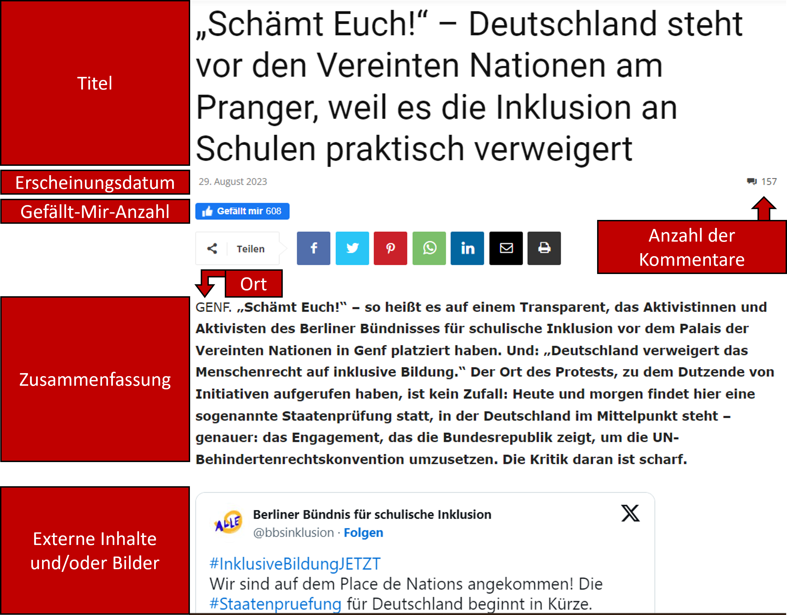
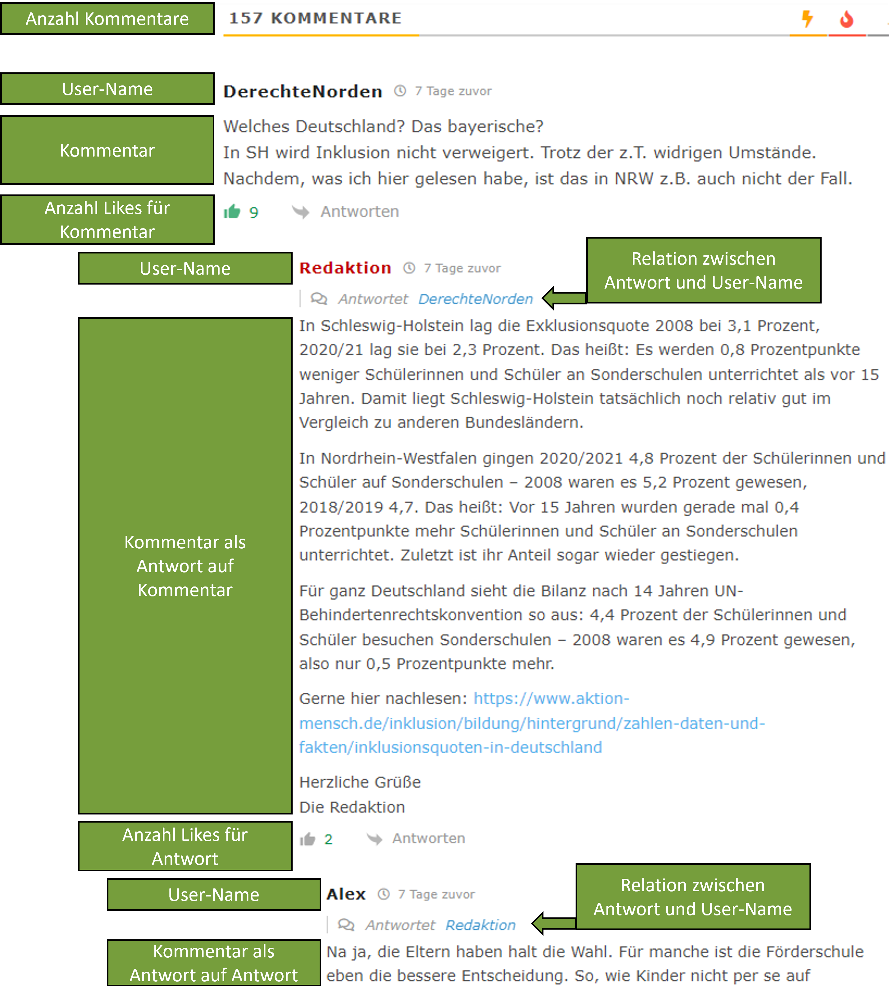
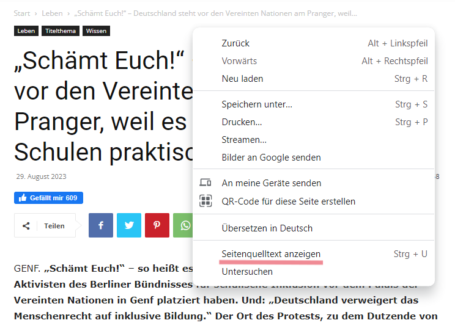
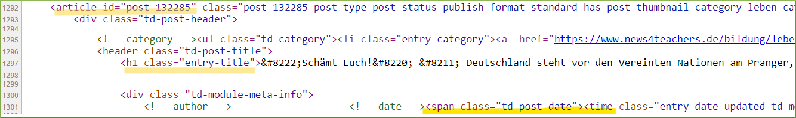

install.packages("rvest")
library(rvest)Einleitung
Mein wertgeschätzter Kollege Timo Lüke (https://timolueke.de/) hat einst im Rahmen einer Medieninhaltsanalyse deutschsprachiger Printmedien (Lüke u. a. 2014) folgende Forschungsfragen aufgeworfen:
- Welches Verständnis von Inklusion wird in den deutschen meinungsführenden Medien kommuniziert?
- Welche Argumente für und gegen die Umsetzung von Inklusion werden genannt?
- Welche Fallbeispiele werden als Belege angeführt?
“Im Rahmen einer systematischen Inhaltsanalyse (Rössler, 2010) deutscher Printmedien untersuchen wir die öffentliche Berichterstattung zum Thema „Inklusion”. Dabei wollen wir verbreitete Definitionen, Argumente und Fallbeispiele systematisch erfassen. So sollen langfristig die Analyse des medialen Diskurses und in der Folge eine Versachlichung der kontroversen Debatte über Inklusion ermöglicht werden.” (Lüke u. a. 2014)
Erste Ergebnisse der Medieninhaltsanalyse sind in Form einer Posterpräsentation verfügbar (Lüke u. a. 2014) und ich erlaube mir die Darstellung des interessanten Posters (Abbildung 1).

Ziele
Allgemeine Zielsetzung
Ich möchte die Medieninhaltsanalyse von Lüke u. a. (2014) replizieren sowie erweitern und mich dabei auf die Textinhalte einer Online-Nachrichten- und Diskussionsseite für Lehrkräfte fokussieren, nämlich News4teachers (News4teachers 2022).
Zielsetzung mit R
Ich möchte exemplarisch aufzeigen, wie die einzelnen Projektphasen der Medieninhaltsanalyse mit der Programmiersprache R umgesetzt werden können. Hierfür werden wir uns auf zwei wichtige Arbeitsschritte fokussieren:
Web-Scraping, also eine automatisierte Methode zum Extrahieren der Textinformationen von der Webseite News4teachers.
Text-Mining: Die mittels Web-Scraping gesammelten Textdaten sollen mit Methoden des Text-Minings analysiert werden. Methoden des Text-Minings fokussieren sich auf die Extraktion von nützlichen Informationen aus unstrukturierten Textdaten. Unstrukturierte Textdaten sind Texte, die nicht in einer festen Datenbankstruktur vorliegen, also z.B. Textinhalte von Websiten. Mit Methoden des Text-Minings kann auch der der sentimentale Ton oder die subjektive Meinung in einem Textdokument ermittelt werden. Das Hauptziel der sogenannten Sentimentanalyse besteht darin, die in einem Textdokument geäußerten Emotionen und Ansichten bezüglich eines bestimmten Themas zu identifizieren, in unserem Fall also z.B. geäußerte Meinungen zum Thema Inklusion.
News4teachers: Online-Nachrichten- und Diskussionsseite für Lehrkräfte
Betrachten wir zunächst das Arbeitsmaterial, also die Webinhalte der Webseite News4teachers, und die entsprechende Selbstbeschreibung der Webseite (News4teachers 2022):
“Wer steckt hinter News4teachers?
News4teachers wird von einer Redaktion aus Lehrern und Journalisten betrieben. Die Seite ist ein gemeinsames Projekt von 4teachers, der Service-Plattform von Lehrern für Lehrer, sowie der Agentur für Bildungsjournalismus.
Was ist News4teachers?
News4teachers ist eine Nachrichten- und Diskussionsseite, die sich mit seriösen Berichten, Analysen und Kommentaren an pädagogische Profis und die an Bildungsthemen interessierte Öffentlichkeit richtet. Die Redaktion sichtet täglich die Meldungen aus Politik, Forschung und Gesellschaft. Auf die Seite gelangt alles, was für die Bildung wichtig ist. News4teachers bietet also einen aktuellen Überblick über die relevanten Informationen für Lehrer, Erzieher, Schüler und Eltern. Und zwar: unabhängig und überparteilich.
Was ist die Idee hinter News4teachers?
News4teachers fühlt sich dem klassischen Journalismus verpflichtet. Das heißt konkret: Wir unterwerfen uns den publizistischen Grundsätzen des Deutschen Presserats, dem Pressekodex. Informationen, die auf die Seite gelangen, wurden zuvor von der Redaktion mit der gebotenen Sorgfalt geprüft. Quellen werden stets genannt, Meinung und Bericht voneinander getrennt. News4teachers unterliegt zudem einer Chronistenpflicht: Alles, was für die Bildungsdebatte in Deutschland von Bedeutung ist, wird aktuell berichtet. Regelmäßige Nutzer von News4teachers sind also immer im Bild.” (News4teachers 2022)
Inhalte von News4teachers und potenzielle Leserschaft aus Lehrkräften
News4teachers verspricht eine unabhängige und überparteiliche Berichterstattung zu Bildungsthemen, wahrscheinlich auch zum Thema Inklusion. Die Inhalte sind für die Leserschaft kostenfrei (werbefinanziertes Angebot). Die Inhalte von News4teachers sind außerdem speziell auf Lehrkräfte ausgerichtet. Somit kann angenommen werden, dass ein großer Teil der Leserschaft aus Lehrkräften besteht. Die Internetseite News4teachers hatte folgende Besucherzahlen (Jahr 2023): Mai (54000 Personen), Juni (60000 Personen) und Juli und August jeweils 55000 Personen (Zahlen ermittelt mit: https://neilpatel.com/website-traffic-checker/). Nehmen wir an, dass die Leserschaft von News4teachers zu 75% aus Lehrkräften aus Deutschland bestünde, dann hätten wir bei einer monatlichen Besucherzahl von 55000 Personen eine monatliche Leserschaft von ca. 41250 Lehrkräften (55000 * 0,75 = 41250). In Deutschland gibt es aber laut Mikrozensus 2022 rund 975000 Lehrkräfte an allgemeinbildenden Schulen. Die potenzielle News4teachers-Leserschaft aus Lehrkräften (41250 Personen) entspräche dann einem Anteil von ca. 5.64% aller Lehrkräfte an allgemeinbildenden Schulen (55000 / 975000 * 100 = 5.64%). Im dargestellten Szenario würden die Inhalte von News4teachers also pro Monat ca. 5.64% der Lehrkräfte an allgemeinbildenden Schulen in Deutschland erreichen (5 von 100 Lehrkräften lesen News4teachers). Dies sind aber nur vage Vermutungen zur Reichweite von News4teachers unter Lehrkräften an allgemeinbildenden Schulen in Deutschland, unter der Annahme, dass 75% der Leserschaft von News4teachers aus Lehrkräften bestünde.
News4teachers bieten der Leserschaft die Möglichkeit die Inhalte zu kommentieren und zu diskutieren (Abbildung 2 und Abbildung 5). Hierfür formuliert die Redaktion spezifische Richtlinien (News4teachers 2022):
“Gibt’s Regeln für die Leserzuschriften in den Foren?
Grundsätzlich gilt: Niemand hat einen Anspruch darauf, in den Foren zu den einzelnen Artikeln eine eigene Wortmeldung zu veröffentlichen. Die Redaktion legt Wert darauf, nur Leserzuschriften zu veröffentlichen, die erkennbar darauf abzielen, einen inhaltlichen Beitrag zur Diskussion des darüberstehenden Artikels zu leisten. Das bedeutet konkret: Auch für Leserzuschriften gelten die publizistischen Grundsätze des Deutschen Presserats, gilt also der Pressekodex.
Kurzgefasst:
- Wir veröffentlichen keine Leserbeiträge, in denen ungeprüfte, unbelegte oder falsche Tatsachenbehauptungen verbreitet werden.
- Wir veröffentlichen keine Hetze gegen Menschen oder Menschengruppen.
- Wir veröffentlichen keine Werbung, ob nun für Produkte oder Parteien.
- Und wir veröffentlichen keine Links auf unseriöse Quellen.
Wir behalten uns darüber hinaus vor, Leserbriefe, die lediglich der Stimmungsmache dienen, zu löschen. Oder Leserbriefe sinnwahrend zu kürzen.” (News4teachers 2022)
[Hier weitere Erläuterungen einfügen]

Explorative Forschungsfragen
Die Inhalte von News4teachers und die Kommentare und Diskussionen der Leserschaft eignen sich eventuell zur Beantwortung folgender Forschungsfragen:
- Auf welche Art und Weise wird das Thema Inklusion auf der Online-Nachrichten- und Diskussionsseite für Lehrkräfte dargestellt?
- Auf welche Art und Weise werden die Inhalte zum Thema Inklusion von der Leserschaft kommentiert und diskutiert?
Web-Scraping
Struktur und Inhalte der Website
Ziel des Web-Scapings wird es sein, die relevanten Webinhalte von News4teachers automatisiert zu extrahieren. Hierfür müssen wir uns erstmal einen Überblick über die Struktur und Inhalte der Website verschaffen. Die Beiträge auf den Internetseiten von News4teachers haben eine spezifische Struktur mit spezifischen Webinhalten. Für unsere Forschungsfragen mehr oder weniger interessante Webinhalte sind in den Abbildungen kenntlich gemacht (Abbildung 3, Abbildung 4 und Abbildung 5).



[Erläuterungen zu den Abbildungen und Inhalten hinzufügen]
Erster Web-Scraping-Versuch
Für das Web-Scraping nutzen wir das R-Zusatzpaket rvest. Der Name des R-Zusatzpaketes ist eine gelungene Anspielung auf das englische Wort harvest (ernten, sammeln), denn wir wollen ja Informationen aus dem Internet sammeln (mit R). Das kreative Wortspiel ist auch im Logo des R-Zusatzpaketes visualisiert. Wir müssen das R-Zusatzpaket installieren und laden.

Für den ersten Web-Scraping-Versuch nutzen wir den Beitrag mit dem Titel “„Schämt Euch!” – Deutschland steht vor den Vereinten Nationen am Pranger, weil es die Inklusion an Schulen praktisch verweigert” (Abbildung 3). Dies ist der Link zum Beitrag:
Wir nutzen den Befehl read_html() und den entsprechenden Link, um sämtliche Informationen von der Website zu extrahieren.
html <- read_html("https://www.news4teachers.de/2023/08/schaemt-euch-deutschland-steht-vor-den-vereinten-nationen-am-pranger-weil-es-die-inklusion-an-schulen-verweigert/")Alle Webinhalte sind nun im Objekt html hinterlegt. Wir sind allerdings nur an spezifischen Webinhalten interessiert und möchten daher im nächsten Schritt einen spezifischen Textinhalt aus dem Objekt html auslesen. Beginnen wir mit einem Textinhalt, welcher sich relativ leicht extrahieren lässt. Wir wollen den Titel des Beitrages extrahieren: “„Schämt Euch!” – Deutschland steht vor den Vereinten Nationen am Pranger, weil es die Inklusion an Schulen praktisch verweigert”. Dabei ist es gar nicht so leicht, einen spezifischen Inhalt wie den Titel zu lokalisieren und auszulesen. Hierfür ist HTML- und CSS-Grundlagenwissen hilfreich (https://www.w3schools.com/html/, https://www.w3schools.com/css/). Die eigentlichen Textinhalte sind nämlich im HTML-Dokument der Webseite hinterlegt. Ist eine Internetseite im Browser geöffnet, so gelangen wir mit einem Rechtsklick i.d.R. zur Option “Seitenquelltext anzeigen” (Abbildung 6). Dies führt uns zum HTML-Dokument (Abbildung 7).


Das HTML-Dokument (Abbildung 7) ist riesig (mehr als 10000 Zeilen) und wir müssen etwas stöbern, um den passenden Inhalt zu lokalisieren. Wir sehen z.B. in der Zeile 1297, dass der Titel des Beitrages ein h1-HTML-Element ist (header 1: Überschrift erster Ebene). Diese Information benötigen wir, um den Titel des Beitrags gezielt auszulesen. Hierfür nutzen wir den Befehl html_elements().
html |> html_elements("h1"){xml_nodeset (1)}
[1] <h1 class="entry-title">„Schämt Euch!“ – Deutschland steht vor den Verein ...Herzlichen Glückwunsch! 🥳 Somit haben wir erfolgreich alle Informationen von der Website extrahiert und eine relevante Textstelle (den Titel) ausgelesen.
Datenstruktur
In Abbildung 7 sehen wir, dass anscheinend jeder Beitrag über eine ID verfügt (id="post-132285"). Wenn wir in unserem zukünftigen Datensatz mehrere Beiträge abspeichern wollen, dann wird eine ID-Variable zwecks Unterscheidung der Beiträge eine hilfreiche Sache sein. Tabelle 1 ist eine erste Idee bezüglich einer möglichen/sinnvollen Datenstruktur.
id | datum | titel | usw. |
|---|---|---|---|
132285 | 29. August 2023 | 'Schämt Euch!' -- Deutschland steht vor | ... |
... | ... | ... | ... |
... | ... | ... | ... |
Um die Datenstruktur aus Tab 1 zu realisieren…
html |> html_elements("article")
TEST |> html_attr("id")Literatur
Lüke, Timo, Matthias R. Hastall, Christian Marschler, und Michael Grosche. 2014. „Was liest man über Inklusion?“ https://doi.org/10.6084/M9.FIGSHARE.1252227.
News4teachers. 2022. „Über uns“. News4teachers. https://www.news4teachers.de/uber-uns/.